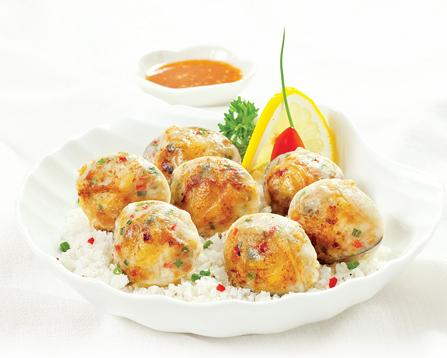

Nghêu nướng mỡ chài

- Khẩu phần4
- Chuẩn bị 10 phút
- Thực hiện 20 phút
Nguyên liệu
- ½ củ hành tây vừa
- 2 củ cà rốt
- 2 củ khoai lang Nhật Bản nhỏ vừa
- 10 con tôm làm sạch
- Mùi tây Nhật
- 2 muỗng canh tinh bột ngô
- Dầu chiên
- 1-2 muỗng canh dầu mè
- 1-2 thìa bột gạo
- Nước xốt: 1 chén dashi, 3 muỗng canh nước
tương, 3 muỗng canh mirin, 2 muỗng canh bột ngọt, 2 muỗng cà phê đường
- Nguyên liệu khác: 50g bột mì, ¼ muỗng cà phê bột
nở, 1/8 muỗng cà phê muối, 1 lòng đỏ trứng, 100ml nước đá
Hướng dẫn thực hiện
- Chuẩn bị một ít nước sôi luộc nghêu vừa chín tới, khi nghêu vừa hé miệng
thì vớt ra.
- Tách nghêu lấy thịt, chừa lại một bên vỏ, rửa sạch.
- Ướp nghêu với một ít hạt nêm và muối tiêu.
- Trải phần mỡ chày đã chuẩn bị ra dĩa, đặt lá quế và nghêu vào, cuộn lớp
mỡ chày lại. ( làm tương tự cho đến hết )
- Đặt nghêu vào vỏ cho lên lò nướng.
- Khi thấy phần mỡ chày chín là được.
- Có thể rắc thêm lên mặt một ít hành lá hay lá quế thái nhuyễn.
- Dọn ăn với muối tiêu chanh